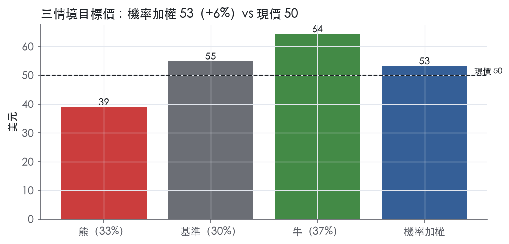
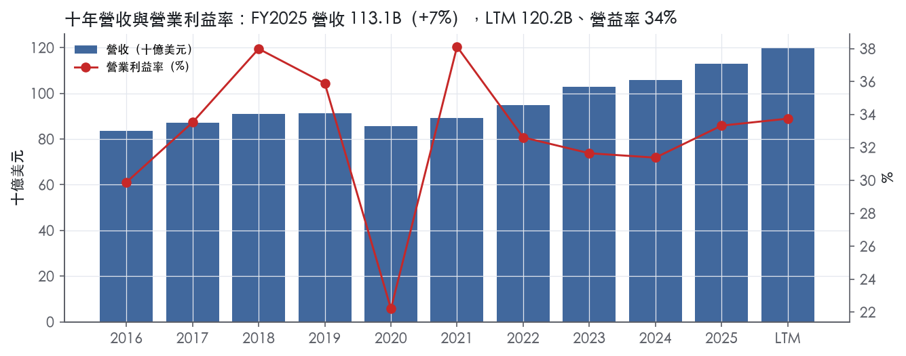
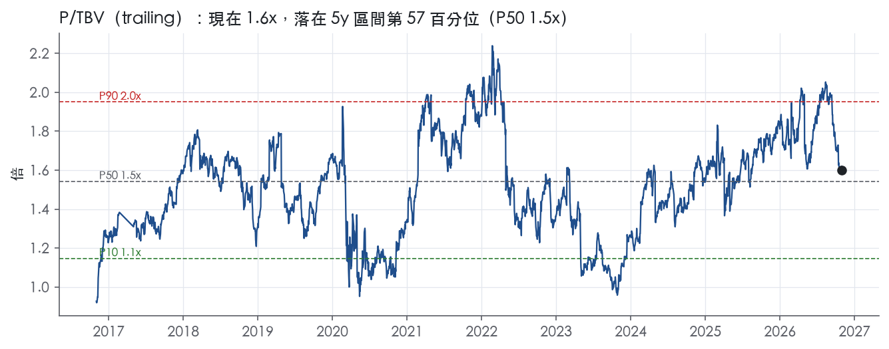
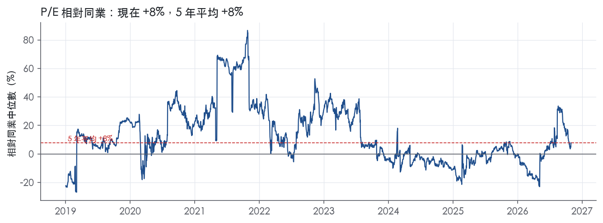
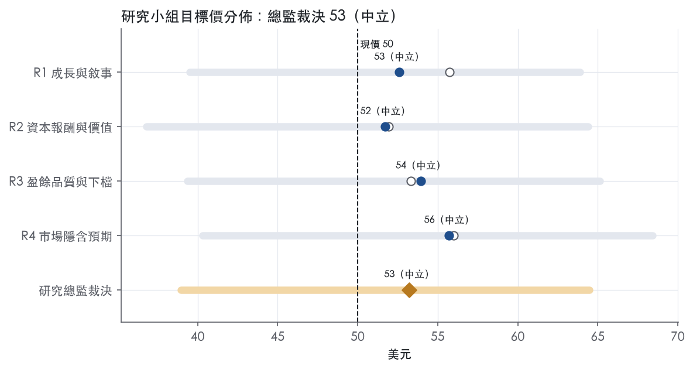
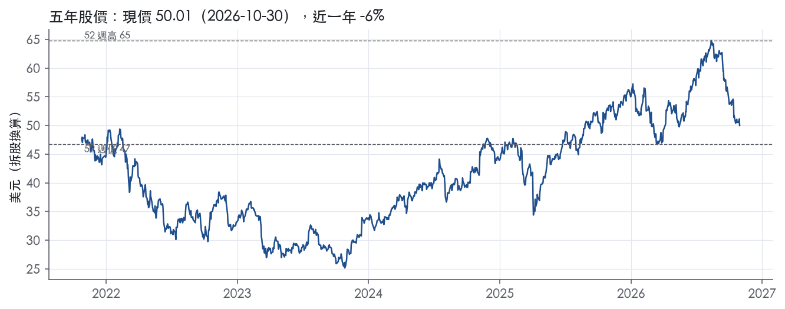

評等總表 › 金融 › BAC
ROTCE部分正常化，P/TBV 1.55x，中性｜評等 中立｜目標價 53
| 報告日 | 評等 | 目標價 | 當時股價 | 超額報酬 |
|---|---|---|---|---|
| 2026-10-30 | 中立 | 53.22 | 50.01 | -1.2% |
| 2026-10-09 | 中立 | 58.22 | 54.32 | -0.9% |
| 快評 | 動作 | 結論 |
|---|---|---|
| 2026-10-14 | 維持 | 罰款拖累3Q26，剔除後仍低於預測 |
| 評等 | 中立 |
| 12 個月目標價 | 53 美元 |
| 現價 | 50.01 美元（2026-10-30） |
| 預期報酬 | 股價 +6.4%＋股息 2.3%＝總報酬 +8.7%；同業籃門檻 10.0%，超額 -1.2% |
| 估值方法 | P/TBV 1.6x，套在一年後的有形淨值 |
| 三情境 | 熊 39／基準 55／牛 64 |
| 研究流程 | 四位研究員兩輪辯論＋研究總監裁決 |
| 資料來源 | SEC EDGAR XBRL、Tiingo、FRED（全免費） |
ROTCE部分正常化，P/TBV 1.55x，中性（研究總監裁決，四位研究員兩輪辯論後）
評等 中立｜12 個月目標價 53 美元（總監三情境機率加權 53 與研究員中位數 53 各半）｜現價 50.01（2026-10-30）
預期報酬：股價 +6.4%＋股息 2.3%＝總報酬 +8.7%。同業籃門檻 10.0%，超額 -1.2%。
估值方法：P/TBV 1.6x，套在一年後的有形淨值。三情境：熊 39（33%）／基準 55（30%）／牛 64（37%）。
什麼會讓研究總監改變看法：低於13.0%或dv.efficiency.FY2026Q4高於63%，倍數降到1.4x轉空；4Q26與1Q27程式口徑ROTCE皆≥14.5%且1Q27提列≤1.5B，倍數升到1.7x轉多。
| 過去四季（實際，FY2026Q3） | 未來四季 | 第 5–8 季 | 第 9–12 季 | |
|---|---|---|---|---|
| 淨營收（B） | 120.2B | 126.8B | 133.1B | 139.1B |
| 淨營收成長 | 5.4% | 5.5% | 5.0% | 4.5% |
| 稅前利益率 | 33.8% | 34.0% | 33.5% | 33.5% |
| EPS（美元） | 4.23 | 4.71 | 5.08 | 5.53 |
| EPS 成長 | 15.8% | 11.5% | 7.8% | 8.9% |
| 每股股息（美元） | 1.16 | 1.16 | 1.16 | 1.16 |
| ROTCE | 14.3% | 15.1% | 15.0% | 15.0% |
| 每股有形淨值（美元） | 32.64 | 35.40 | 38.52 | 42.11 |
| P/E（現價） | 11.8x | 10.6x | 9.9x | 9.0x |
| P/TBV（現價） | 1.5x | 1.4x | 1.3x | 1.2x |
| 股息殖利率（現價） | 2.3% | 2.3% | 2.3% | 2.3% |
過去四季為申報數字；預測為研究總監的假設、程式計算。倍數與殖利率都用現價計算，用來看現價對應各期獲利的高低。
| 項目 | 上次（2026-10-12） | 這次（2026-10-31） | 變動 |
|---|---|---|---|
| 評等 | 中立 | 中立 | ＝ |
| 機率加權目標價（美元） | 58 | 53 | -8.6% |
| 超額報酬 | -0.9% | -1.2% | -0.3 pp |
| 目標倍數 | 1.7x | 1.55x | — |
| 未來四季營收成長 | 4.0% | 5.5% | +1.5 pp |
| 未來四季營益率 | 35.0% | 34.0% | -1.0 pp |
| 未來四季 EPS（美元） | 5.33 | 4.71 | -11.7% |
| 熊／基準／牛機率 | 34／28／38 | 33／30／37 | — |
程式計算；「未來四季」各自從當次報告的資料起點算。研究總監逐點說明見第八章「與上次報告比較」。
| 情境 | 機率（歷史） | 故事 | 未來四季營收成長 | 第 5–8 季稅前利益率 | 倍數 | 目標價 | 股價漲跌 |
|---|---|---|---|---|---|---|---|
| 熊 | 33%（35%） | 風險表第3條CECL自備抵1.0%低點於y1前置提列（本行下行失業率5.3）、第1條fed funds 3.62於y2壓NII、第2條第二筆十億級和解；觸發nco_rate連兩季≥0.6%、備抵回1.2%、卡片利差<6.5% | -2.0% | 29.0% | 1.1x | 39 | -22.1% |
| 基準 | 30%（26%） | 政策利率4.38不降撐NII，交易自2Q26高點正常化，信用自備抵1.0%低點溫和正常化，程式口徑ROTCE落在12季平均與NTM之間，報酬來自TBV累積與股利 | 5.5% | 33.5% | 1.6x | 55 | 9.7% |
| 牛 | 37%（39%） | 本行上行路徑（利差1.38）下NII與資產管理費延續年增、交易持平、無新和解費用，程式口徑ROTCE守15%，倍數到NTM ROTCE合理值1.8x | 7.5% | 36.5% | 1.8x | 64 | 28.9% |
目標價由程式依研究總監的驅動與倍數計算；機率由研究總監給定。括號內是歷史頻率：把這檔股票過去十年 12 個月報酬的波動形狀，置中在基準情境，結果落在各情境附近的比例。

四位研究員用不同方法各自估值，回應研究總監的質疑後交出第二輪，最後由總監逐點裁決。各研究員的主張見第七章，裁決理由見第八章，完整論證見《研究底稿》。
| 立場（一輪→二輪） | 加權目標價（一輪→二輪） | 評等（一輪→二輪） | 第二輪倍數 | 熊～牛目標價 | |
|---|---|---|---|---|---|
| R1 成長與敘事 | 看多→中性 | 56→53 | 中立→中立 | 1.6x | 39～64 |
| R2 資本報酬與價值 | 中性→中性 | 52→52 | 中立→中立 | 1.5x | 37～64 |
| R3 盈餘品質與下檔 | 中性→中性 | 53→54 | 中立→中立 | 1.6x | 39～65 |
| R4 市場隱含預期 | 看多→看多 | 56→56 | 中立→中立 | 1.6x | 40～68 |
| 研究總監裁決 | 中性 | 53 | 中立 | 1.6x | 39～64 |
目標價由程式依各自的驅動與倍數計算；評等＝機率加權總報酬 − 同業籃門檻。
Bank of America 是一家美國系統重要性銀行控股公司（G-SIB），旗下銀行與非銀行子公司提供消費金融、財富管理、企業與投資銀行、以及市場交易四大類服務。公司透過消費銀行、全球財富與投資管理（GWIM）、全球銀行（Global Banking）、全球市場（Global Markets）四個報導分部服務個人消費者、中小企業、大型企業、機構投資人與政府客戶¹。截至 2026 年 10 月 30 日，公司市值 346.20B 美元，LTM 營收 120.16B 美元，是美國最大的銀行集團之一。Bank of America Corporation 作為控股公司，依賴銀行與非銀行子公司的股利、分配與貸款來支應母公司的股利支付與其他債務義務¹。
四大分部規模與重心各異，10-K 未揭露各分部占總營收的精確百分比拆分表，但由季度財報可估算相對規模。消費銀行（Consumer Banking）提供支票、儲蓄、信用卡、住宅貸款與小型企業貸款，3Q26 營收 11,572M 美元，年增 4%²，是四個分部中營收規模最大者。全球財富與投資管理（GWIM）涵蓋 Merrill 與 Private Bank 的經紀、顧問與資產管理業務，3Q26 營收 7,118M 美元，年增 13%，主要由資產管理手續費成長 16% 至 4.5B 美元驅動，反映市場估值上升、強勁 AUM 流入與較高淨利息收入²。全球銀行（Global Banking）服務企業與商業客戶的授信、現金管理與投資銀行業務，3Q26 總公司投資銀行手續費（不含自辦）1.8B 美元，年減 11%，平均存款 669B 美元，年增 6%²。全球市場（Global Markets）從事固定收益、外匯、商品（FICC）與股票交易，3Q26 銷售交易收入 5.1B 美元，年減 5%，其中 FICC 收入 2.6B 美元年減 17%，股票收入 2.5B 美元年增 11%²。公司表示其業務模式高度仰賴資本市場融資與全球存款基礎，流動性主要來自全球來源存款以及資本市場上的有擔保與無擔保負債¹。
BAC 的客戶群從一般消費者延伸到全球機構投資人，地理上以美國本土為主，同時在新興市場從事交易與投資業務。消費銀行在美國消費存款排名第一，連續 21 個季度為美國小型企業放款第一名²；3Q26 消費銀行平均存款 949B 美元（原文揭露為「$949 billion」），平均放款與租賃 321B 美元，規模龐大且相對穩定²。公司數位通路滲透率高：3Q26 擁有 38.9M 消費支票帳戶，4.2B 次數位登入，71% 的銷售為數位化完成²。公司也從事與主權國家、州與地方政府的業務往來，並承認非美國業務面臨較高的政治、經濟與監管風險，尤其在新興市場¹。GWIM 客戶總餘額（期末）達 5,056.8B 美元，年增 9%，AUM 餘額約 2,400B 美元，年增 12%²，顯示公司財富管理業務的客戶集中在高淨值與機構客群。公司在信用風險揭露中特別提及對金融服務業（經紀商、商業銀行、投資銀行、保險公司、對沖基金、中央清算機構等）存在顯著集中度¹。
過去四個季度營收呈現先升後因單次費用而回落的軌跡，淨利息收入持續年增，但本季出現一次性監管和解費用拖累獲利。FY2025Q4（2025-12-31）營收 28.37B 美元，年減 3.2%，EPS 1.00，效率比 61.5%。FY2026Q1（2026-03-31）營收回升至 30.27B 美元，年增 7.2%，EPS 1.11。FY2026Q2（2026-06-30）淨利 9.1B 美元，EPS 1.21，較去年同期增加 34%，營收 31.6B 美元，年增 15%，淨利息收入 16.0B 美元（FTE 16.2B 美元），年增 9%，效率比改善 359 個基點至 59%³；CFO Alastair Borthwick 表示第二季表現反映每個業務分部的強勁營收成長與股東權益報酬率、資產報酬率的改善³。FY2026Q3（2026-09-30）淨利 6.9B 美元，EPS 0.91，較去年同期的 8.3B 美元、EPS 1.04 下滑，主因為一筆 1.2B 美元的監管和解費用，剔除該費用後調整後淨利為 8.1B 美元，調整後 EPS 為 1.08²；營收 30.0B 美元（FTE 30.1B 美元），年增 3%，淨利息收入 16.4B 美元（FTE 16.6B 美元），年增 8%，淨利息收益率（FTE）2.16%，年增 15 個基點²。CEO Brian Moynihan 表示本季投資銀行與銷售交易收入雖較低，但商業貸款在每個客戶族群都成長，存款、財富流入與消費活動的動能支撐了穩健獲利²。公司本季回饋股東 8.3B 美元（2.2B 美元現金股利、6.0B 美元回購），每股有形帳面淨值升至 29.14 美元，年增 3%²。資料包顯示 LTM ROTCE 自 2025Q3 的 14.4% 升至 2026Q2 的 15.8%，但 2026Q3 因和解費用回落至 12.3%。
公司將 AI 應用列為效率與風險管理的核心槓桿：超過 200,000 名員工使用 AI 工具，公司內部核准超過 300 項 AI 應用案例，管理層稱「我們正把規模轉化為競爭優勢」²。公司強調存款成長的連續性——消費銀行連續 31 個季度實現淨新增支票帳戶成長，平均貸款與租賃連續第 10 個季度環比增加，橫跨所有業務分部²。在財富管理端，公司將資產管理手續費成長與 AUM 流入視為結構性成長引擎，並持續在 Merrill 與 Private Bank 增加 500K 美元以上淨值客戶關係²。10-K 則將宏觀與監管環境列為營運的主要變數，包括利率路徑、資本市場波動、信用損失準備（CECL）模型的不確定性，以及地緣政治與網路安全風險對業務連續性的威脅¹。
就我方判斷，BAC 的基本面故事是淨利息收入隨利率與放款成長穩定擴張，疊加財富管理手續費的結構性成長，兩者共同撐住獲利，而交易與投資銀行手續費波動性較高、是獲利的主要變數。本季的監管和解費用屬一次性項目，調整後 ROTCE（14.9%）與調整後 EPS（1.08）更能反映核心獲利能力，應作為後續估值基準。目前 P/E 11.8x 低於過去五年中位數 12.7x，顯示市場對本季一次性費用已有一定程度的消化，但仍需觀察下一季效率比是否回到 60% 以下的常態區間。

BAC 的護城河評為窄，核心是低成本存款帶來的資金成本優勢；我們有把握它在未來 5 年以上維持有形股東權益報酬高於資本成本，但沒有把握延伸到 10 年。以 ROE 衡量，超額報酬幾乎為零；以 ROTCE 衡量，超額報酬明確為正；這個落差是我們不給寬評級的主因。趨勢判為穩定：近八季 ROTCE 與淨利息收入／平均總資產走高，但最新一季效率比惡化，兩股力量互相抵銷。
成本優勢（低成本存款資金）是主要來源。10-K 自述流動性 "is primarily supported by globally sourced deposits in our bank entities"¹。近八季放款／存款比介於 55.8%與 61.4%之間，代表存款遠超過放款，資產負債表主要由存款支撐，而非依賴批發融資。淨利息收入／平均總資產從 1.7%升至 1.9%，利差持續擴張，顯示資金端仍有定價空間。
無形資產（品牌與系統重要性地位）是次要來源。公司在資安風險段落自承，其 "prominent size and scale, high-profile brand, global presence and role in the financial services industry" 使其成為攻擊目標¹。這段話從反面證明了品牌與規模的辨識度。公司也寫明信用評等 "are also important to investors, clients or counterparties when we compete in certain markets and seek to engage in certain transactions, including over-the-counter (OTC) derivatives"¹。大型資產負債表加上評等，構成中型銀行難以複製的進入門檻。
轉換成本、網路效應與效率規模三類，在本次取得的原文中找不到可點名的直接證據，因此不列。
數字能證明獲利穩定，但只能部分證明超額報酬，與我們的主張存在衝突。
穩定性支持主張。
超額報酬與主張衝突。
我們仍維持窄評級，理由有二。
不升到寬的理由。 ROTCE 只有八季資料，無法驗證十年期的持續性，而 ROE 層級的超額報酬又接近零，因此不給寬。
最大威脅是存款這項成本優勢本身遭到侵蝕。
目標倍數相對大型同業應持平，不給溢價。窄護城河由 ROTCE 支撐，但 ROE 層級的超額報酬只有 -0.5%，存款優勢又同時面臨降息與資金遷移兩項威脅，不足以支撐高於同業的倍數。建議以自身歷史中位數作為錨點，不需上調：目前 P/TBV 1.6x 貼近 5 年中位數 1.5x，P/E 11.8x 低於 5 年中位數 12.7x。
| 指標 | 最新 | 十年平均 | 標準差 | 最低 | 最高 |
|---|---|---|---|---|---|
| ROE | 10.2% | 9.5% | 1.6% | 6.7% | 11.8% |
| 稅前利益率 | 33.3% | 32.7% | 4.4% | 22.2% | 38.1% |
| 淨營收成長 | 6.8% | 3.5% | 4.1% | -6.3% | 8.2% |
程式計算。資本成本代理值（10 年債＋5%）：10.0%；ROE 十年平均減資本成本：-0.5%；ROE 有資料的 9 年中，高於資本成本 5 年。
銀行業的 CFO／FCF／EBITDA 定義不適用於驗證盈餘品質，必須改用效率比、信用成本、備抵覆蓋與資本回饋來判斷。LTM GAAP 稀釋 EPS 4.23，3Q26 單季因 12 億美元（0.17 美元／股）法規和解費用壓低當季 EPS 至 0.91 美元²，排除後調整 EPS 為 1.08 美元²，屬於一次性項目而非經常性盈餘惡化。
銀行業不適用傳統現金轉換指標，CFO、FCF 在資料包中對 BAC 不具意義，不引用。改用放款／存款比與淨利息收入趨勢觀察：放款／存款比從 FY2024Q4 的 55.8% 穩步上升至 FY2026Q3 的 61.4%（量化底稿 dv.loan_to_deposit），顯示放款成長快於存款，資金壓力上升但尚未達警戒。淨利息收入（FTE）由 3Q25 的 15.9B 升至 3Q26 的 16.6B²，核心利息收入持續成長，支撐 GAAP 盈餘的可信度。淨沖銷率維持在 0.4%–0.5% 區間（量化底稿 dv.nco_rate），信用品質穩定，沒有放大盈餘的異常訊號。
3Q26 新聞稿揭露提列為 1.3B 美元，與 3Q25 的 1.3B 美元大致持平，淨沖銷 1.3B 美元較 3Q25 與 2Q26 的 1.4B 美元下降²。GAAP 淨利 6.9B 美元、EPS 0.91 美元，公司將其中 1.2B 美元（每股 0.17 美元）的「法規和解費用」（regulatory settlement charge）排除後調整為非 GAAP 淨利 8.1B 美元、調整 EPS 1.08 美元²。費用端，GAAP 非利息費用 19.7B 美元，排除罰款後調整為 18.5B 美元，GAAP 效率比 66%、調整後 62%²。ROE／ROTCE／ROA 同樣有 GAAP 與調整兩套：ROTCE GAAP 12.6% vs 調整後 14.9%²。這筆法規和解費用屬於真實的現金支出（屬監管罰款性質），不是會計估計遊戲，但確實是非經常性項目，分析師應把它當作「真實成本但不代表未來常態」處理。SBC 另計入燈號分析，見下節。
CET1 資本 198B 美元，季減 3.2B 美元，CET1 比率（標準法）10.9%，仍遠高於監管下限²。股東權益回饋金額本季 8.3B 美元（股利 2.2B 美元＋回購 6.0B 美元）²，計分表（股利＋回購）／淨利 LTM 為 79.3%，十年平均 54.5%，燈號綠。稀釋股數年變動 LTM -1.0%，十年平均 -3.9%，燈號綠，顯示公司持續淨減少股數而非稀釋股東【判，依量化底稿】。每股有形淨值（tbv_ps）由 FY2024Q4 的 26.25 升至 FY2026Q3 的 32.64，帳面價值持續累積，與公司揭露的「tangible book value per common share rose 3% to $29.14」方向一致但口徑不同（公司季度數字與年度快照期點不同）²／。銀行屬監管資本驅動的槓桿模型，傳統淨負債／EBITDA 概念不適用，資本配置能力取決於 CCAR／SCB 結果，公司 2025 CCAR 測試後 SCB 降至 2.5%，G-SIB 附加資本為 3.0%¹，代表監管對回饋空間的限制在邊際放寬但仍是硬約束。
SBC／營收黃燈（LTM 3.5% vs 十年均 2.6%）：股權薪酬占營收比重持續走高，近三年均 3.2%、LTM 3.5%，屬於結構性上升而非單季異常，反映人才成本上升，本系統不加回故直接計入盈餘品質折扣考量，判定為真實但可解釋的成本上升，非一次性。
稀釋股數年變動綠燈：LTM -1.0%，顯示淨股數減少，回購力度足以抵消股權獎酬發行的稀釋效果，非紅旗【判，依量化底稿】。
（股利＋回購）／淨利綠燈但 LTM 79.3% 明顯高於十年均 54.5%：回饋比率上升主要因為本季 GAAP 淨利被法規罰款壓低、分母縮小所致的機械效果，而非舉債擴大回饋，公司 CET1 比率仍達 10.9%、遠高於監管下限²，判定為假警報、口徑效果而非真實槓桿風險上升。
程式紅旗：淨利率 FY2020→FY2021 跳動＋15 個百分點：此為備抵壞帳於 2020 年新冠疫情期間大幅提列、2021 年轉為釋放的典型信用週期效果，屬於會計估計（CECL 備抵）隨宏觀情境反轉的正常現象而非盈餘操縱，10-K 本次節錄未直接揭露當年明細數字，無法引用原文金額佐證，但方向與銀行業信用成本週期性一致，判定為可解釋的一次性／週期性項目，非未解釋紅旗。
估值應以調整後 EPS（排除法規和解費用）作為核心獲利能力基礎，但不應完全忽略 GAAP 數字，因為監管罰款屬真實現金流出且未來仍可能重演，建議對 LTM GAAP EPS 4.23 做小幅品質折扣而非全額採用調整數。槓桿本身不是限制倍數的理由，CET1 10.9% 與 SCB 2.5% 顯示資本緩衝充足，倍數應主要由 ROTCE 趨勢（12.3%–15.8% 區間）與放款／存款比上升趨勢驅動的資金成本風險決定，而非資產負債表槓桿疑慮。SBC 比重走高建議在估值模型中以費用化方式全額反映，不做加回，以避免高估經常性盈餘。
| 項目 | LTM | 近三年 | 十年 | 燈號 | 規則 |
|---|---|---|---|---|---|
| SBC／營收 | 3.5% | 3.2% | 2.6% | 黃 | ≤3.0% 綠、>8.0% 紅 |
| 稀釋股數年變動 | -1.0% | -2.0% | -3.9% | 綠 | ≤0.0% 綠、>3.0% 紅 |
| （股利＋回購）／淨利 | 79.3% | 45.4% | 54.5% | 綠 | ≥50.0% 綠、<0.0% 紅 |
程式計算；燈號以 LTM（無則近三年平均）判定。銀行的現金流、淨負債、利息保障是本業，不列入。
| 指標 | FY2025Q2 | FY2025Q3 | FY2025Q4 | FY2026Q1 | FY2026Q2 | FY2026Q3 |
|---|---|---|---|---|---|---|
| 淨利息收入（B） | 14.7B | 15.2B | 15.8B | 15.7B | 16.0B | 16.4B |
| 淨利息收入／平均總資產 | 1.7% | 1.8% | 1.8% | 1.8% | 1.8% | 1.9% |
| 效率比 | 62.6% | 59.7% | 61.5% | 61.2% | 59.0% | 65.8% |
| 信用成本率 | — | — | — | — | — | — |
| 淨沖銷率 | 0.5% | 0.5% | 0.4% | 0.5% | 0.5% | 0.4% |
| 備抵／放款 | 1.2% | 1.1% | 1.1% | 1.1% | 1.1% | 1.0% |
| 放款／存款 | 57.0% | 58.2% | 58.7% | 59.1% | 60.1% | 61.4% |
| ROTCE | 12.6% | 14.4% | 14.8% | 14.9% | 15.8% | 12.3% |
| 每股有形淨值（美元） | 30.54 | 31.59 | 28.62 | 32.24 | 32.81 | 32.64 |
程式依 SEC XBRL 計算；季度流量年化。效率比＝非利息費用÷淨營收（越低越好）；信用成本率＝提列÷放款；淨沖銷率＝淨沖銷÷放款；淨利息收入÷平均總資產不是淨利差（NIM 的分母是生息資產，XBRL 沒有）。CET1 等監理資本比率不在 XBRL，見財報新聞稿。
| 風險 | 觸發指標（看什麼數字、在哪裡看） | 對 EPS 的影響方向與粗略幅度 | 未來 12 個月發生機率 | 出處 |
|---|---|---|---|---|
| 1. Fed 降息快於預期，淨利息收入轉弱 | 淨利息收益率（FTE）季度數字、fed funds 利率公告（FOMC） | 負向；3Q26 NII 年增 8%、殖利率 2.16%（+15bps）已是高基期，降息會使此優勢反轉，幅度中² | 中 | 10-K 年報 FY2025 Item 1A（風險因素） |
| 2. 監管／法遵罰款與和解費用 | 新聞稿中是否再出現「regulatory settlement charge」項目、Noninterest expense 季增幅 | 負向；3Q26 單季認列 1.2B 美元和解費用，拖累 EPS 0.17 元（0.91 vs 調整後 1.08）² | 中 | 8-K 財報新聞稿（2026-10-14） |
| 3. 信用成本／CECL 準備金因經濟轉弱而上升 | 提列呆帳（provision for credit losses）、淨沖銷率（nco_rate）、備抵／放款比率 | 負向；3Q26 提列 1.3B 美元，與去年同期持平，若惡化需觀察消費信用卡與商用不動產（尤其辦公室）部位，幅度中大⁴ | 中 | ²／⁴ |
| 4. 交易與投資銀行手續費隨市場波動劇烈起伏 | 季度 Sales and trading revenue、投資銀行手續費年增率 | 負向；3Q26 銷售交易收入年減 5%、FICC 年減 17%、投行手續費年減 11%，屬 All Other 外的高波動分部，幅度中² | 中 | 8-K 財報新聞稿（2026-10-14） |
| 5. 資本要求提升限制股票回購與股利（SCB／G-SIB surcharge 調整） | CET1 比率、Fed 年度 CCAR 結果公告（通常 6 月）、SCB／G-SIB surcharge 數字 | 負向但主要影響股東回報節奏而非當期 EPS，幅度小至中；目前 CET1 10.9%，SCB 2.5%、G-SIB surcharge 3.0%⁴ | 低 | 10-K 年報 FY2025 Item 1A（風險因素） |
利率下行風險是五條裡對 EPS 影響最直接也最可監測的一條，因為公司自己把「未來降息幅度與速度」列為市場風險的核心變數⁴。10-K 明確寫道：「若聯準會為刺激經濟或其他原因改變貨幣政策導致利率下降，通常會透過較低的淨利息收入導致營收下降，可能對經營成果產生不利影響」⁴。公司過去四季淨利息收益率持續爬升（FY2025Q4 至 FY2026Q3 由約 1.8% 升至 1.9%，dv.nii_to_assets）【判，依資料包】，顯示目前處於有利區間；但這個順風一旦反轉，EPS 的敏感度會相當高，且監測指標（FOMC 會議決議、季度 NIM）非常明確，故排第一。
監管罰款與法遵成本是第二條，理由是它已經實際發生並可量化：3Q26 單季一次性和解費用 1.2B 美元直接拉低 EPS 0.17 元，使效率比由調整後 62% 惡化為報告值 66%²。10-K 本身也警示，公司在反洗錢、制裁、消費者保護等多項法規下面臨「執法與罰款」的常態性曝險⁴。這類費用的特點是不可預測但一旦發生金額往往以十億美元計，對單季 EPS 衝擊立即可見，因此即使機率判斷為「中」，仍排在利率風險之後、但高於其他三條。
信用成本上升風險排第三，因為目前的提列水準（1.3B 美元，與去年同期持平）²尚未顯示惡化跡象，但 10-K 明確點名商用不動產（尤其辦公室部門）與消費信用卡是「持續存在風險」的集中度領域⁴。CECL 模型本質上依賴對未來經濟情境的預測，10-K 承認「若模型、估計與假設證明不準確，我們可能遭受超出現有準備金的損失」⁴。這條風險的監測指標清楚（每季提列與淨沖銷率），但目前數字平穩，故機率判斷「中」而非「高」。
交易與投行手續費波動排第四，因為這塊業務天生具有週期性，且 3Q26 已經出現雙位數衰退（FICC -17%、投行手續費 -11%），但同期股票交易收入逆勢成長 11%，顯示並非系統性崩跌而是細分市場輪動²。對 EPS 的影響方向明確為負（當這些手續費下滑時），但因公司業務組合分散、GWIM 與消費銀行的穩定成長可部分抵銷，整體對合併 EPS 的淨幅度判斷為中。
資本要求與股東回報限制排最後，因為 10-K 說明聯準會可能提高壓力資本緩衝（SCB）或 G-SIB 附加費，進而限制股利與回購⁴，但目前 CET1 比率 10.9%，遠高於法定最低要求，且 SCB 已降至 2.5%（FY2025 CCAR 結果）⁴，顯示短期內無立即壓力。此風險主要影響股東總回報的「組成」（股利 vs 回購），而非當期每股盈餘，故列為機率最低、影響幅度最小的一條。
財富管理手續費對市場估值的依賴度被低估。GWIM 本季資產管理手續費年增 16%，公司明確說明驅動因素是「較高的市場估值、強勁的 AUM 流入與較高的 NII」²，換言之這塊已成長為 7.1B 美元營收、年增 13% 的分部，其手續費收入高度綁定股市估值水準。10-K 的市場風險章節談的是交易帳本的公允價值風險，並未把「AUM 計價手續費對股市估值的槓桿暴露」單獨列為風險因子討論。若股市從目前高位回落，GWIM 手續費收入的下滑速度可能快於 10-K 一般性市場風險段落暗示的程度，值得單獨追蹤標普 500 或 AUM 季度餘額變化。
單一分部盈餘對沖後的集中依賴。消費銀行與 GWIM 兩個分部合計淨利已占相當高比例（3Q26 消費銀行 3.5B 美元 + GWIM 1.5B 美元，相對全公司 6.9B 美元）²，顯示公司獲利結構正從傳統的全球市場／投行手續費，逐步傾斜到存款與資產管理這兩塊對利率與股市更敏感的業務。10-K 的業務分部競爭敘述並未把這種「盈餘集中度位移」本身列為風險，但這意味著未來利率與股市的連動性會比歷史上更直接地反映在合併 EPS 上，建議在估值模型中單獨追蹤這兩個分部的淨利占比變化。
現價 50.01 對應 trailing（過去四季）P/E 11.8x、P/TBV 1.6x（ROTCE 14.3%）、股息殖利率 2.3%。主要估值倍數 P/TBV 現在 1.6x，落在5 年區間第 57 百分位（P10／P50／P90 = 1.1x／1.5x／2.0x）。

把程式的機械基準預測放到現價下，市場付的前瞻倍數是：P/TBV（未來四季） 1.4x、P/E（未來四季） 10.6x、P/TBV（第 5–8 季） 1.3x、P/E（第 5–8 季） 9.5x。
| 倍數 | 現在 | 5 年 P10 | 5 年 P50 | 5 年 P90 | 現在分位 | 全期 P50 |
|---|---|---|---|---|---|---|
| P/E | 11.8x | 8.6x | 12.7x | 15.1x | 41.7% | 12.9x |
| P/TBV | 1.6x | 1.1x | 1.5x | 2.0x | 56.6% | 1.5x |
trailing 倍數（股價 ÷ 過去四季）；分位以每個交易日計算。
同業籃：C, COF, BANC, CAC, CARE, ASRV（SIC 6021 同業 21 家中，CY2025 營收最接近的 6 家）。評等門檻 10.0%：同業「倍數不變下持有一年」的隱含報酬中位數（＝ 盈餘殖利率 ×(1＋g)＋g，g 為 5 年營收年複合成長並夾在 −2%～8%），每家夾在 0～15%、P/E 低於 5 倍視為資料可疑而排除，中位數再限制在 10 年債到 10 年債＋5% 之間（同業原始中位數 14.2%）；排除：BANC（隱含報酬算不出來）、CARE（P/E 5.0x 資料可疑）。
| 代號 | 市值 | 5 年營收 CAGR | ROTCE | P/E | 5 年 P/E 中位數 | P/TBV | 隱含報酬 |
|---|---|---|---|---|---|---|---|
| BAC | 346.2B | 5.7% | 14.3% | 11.8x | 12.7x | 1.5x | 14.7% |
| C | 229.7B | 2.5% | 7.8% | 17.3x | 11.7x | 1.4x | 8.4% |
| COF | 125.7B | 13.4% | 17.0% | 12.2x | 11.1x | 2.1x | 16.9% |
| BANC | 2.8B | 243.4% | -2.4% | — | — | 1.1x | — |
| CAC | 1.0B | 8.5% | 15.4% | 11.0x | 10.7x | 1.7x | 17.8% |
| CARE | 0.6B | 2.5% | 23.9% | 5.0x | 12.7x | 1.2x | 23.0% |
| ASRV | 0.1B | 2.7% | 7.8% | 9.6x | 10.8x | 0.8x | 13.3% |
| 同業中位數 | 5.6% | 11.6% | 11.0x | 11.1x | 1.3x | 10.0% |
全部 trailing，程式以各公司 SEC XBRL 與 Tiingo 行情計算；第一列為本檔。
P/E 相對同業中位數：現在 7.7%，過去 1 年平均 1.9%、3 年 -1.9%、5 年 7.8%。

程式的機械基準（成長率從過去四季年增率三年收斂到 6%、利潤率持平）用 P/TBV 5 年 P50（trailing） 估值得到 55（10.2%），用現行倍數得到 57。這兩個數字只是參考點，不是本報告的目標價；研究員對這個定價的回應在第七章。
下表是每位研究員第一輪（各自獨立）與第二輪（回應研究總監的質疑後）的結果。目標價全由程式依各自的假設計算。
| 立場（一輪→二輪） | 加權目標價（一輪→二輪） | 評等（一輪→二輪） | 第二輪倍數 | 熊～牛目標價 | |
|---|---|---|---|---|---|
| R1 成長與敘事 | 看多→中性 | 56→53 | 中立→中立 | 1.6x | 39～64 |
| R2 資本報酬與價值 | 中性→中性 | 52→52 | 中立→中立 | 1.5x | 37～64 |
| R3 盈餘品質與下檔 | 中性→中性 | 53→54 | 中立→中立 | 1.6x | 39～65 |
| R4 市場隱含預期 | 看多→看多 | 56→56 | 中立→中立 | 1.6x | 40～68 |
| 研究總監裁決 | 中性 | 53 | 中立 | 1.6x | 39～64 |
目標價由程式依各自的驅動與倍數計算；評等＝機率加權總報酬 − 同業籃門檻。
分歧度：第一輪 加權目標價 52～56（區間＝現價的 8%）· 倍數 1.5～1.6x · 立場 看多×2、中性×2；第二輪 加權目標價 52～56（區間＝現價的 8%）· 倍數 1.5～1.6x · 立場 中性×3、看多×1。

| 研究員 | 第二輪主張 | 堅持的理由 |
|---|---|---|
| R1 成長與敘事 | 看法中性，給1.6x P/TBV，因為調整後ROTCE 14.9%高於12季平均。 | 股數只減2.0%，因為員工股票報酬抵掉大部分買回。 |
| R2 資本報酬與價值 | 看法中性，給1.5x P/TBV，因為永續ROTCE只有13.5%。 | 利率抬高ROTCE，也抬高要求報酬，所以倍數回到十年中位數1.5x。 |
| R3 盈餘品質與下檔 | 看法中性，給1.55x P/TBV，因為ROTCE只會部分正常化。 | 法遵罰款會反覆出現，備抵比率在八季低點，倍數應低於現行1.6x。 |
| R4 市場隱含預期 | 溫和看多，給1.6x P/TBV，因為市場低估ROTCE。 | 和解費用前四季ROTCE在14.4%–15.8%，市場卻只按12.5%定價。 |
每位研究員的逐條回應與完整論證見《研究底稿》（BAC_研究底稿_2026-10-31.docx）。
| 分歧點 | R1 | R2 | R3 | R4 | 什麼資料會分出勝負 |
|---|---|---|---|---|---|
| 目標 P/TBV（multiple） | 1.6x：調整後 ROTCE 14.9% 高於 12 季平均 12.5%，窄護城河不加碼 | 1.5x：永續 ROTCE 13.5%，要求報酬改用 10 年債 5.19＋5% | 1.55x：法遵罰款是常態曝險、備抵 1.0% 八季低點，ROTCE 只部分正常化 | 1.6x：一次性費用退場，程式口徑 ROTCE 回 14–15%，市場定在 12.5% 太低 | 、（2027 年 1 月中） |
| 稅前利益率 y2（op_margin_y2） | 34.5%：重定價＋營運槓桿回正 | 33.0%：信用成本自備抵 1.0%／淨沖銷 0.4% 低點正常化 | 33.5%：溫和正常化、重定價部分抵銷 | 34.5%（y3 34.0%） | 1Q27、2Q27 提列是否突破 1.5B；備抵／放款是否回 1.1% 以上 |
| 營收成長 y1（rev_growth_y1） | 6.0%：NII 年增 8%、放款連 10 季季增 | 5.5%：重定價合約性，非利息收入持平 | 5.0%：交易自高點正常化、放款／存款 61.4% | 6.5%：NII 年增 8%、NIY 2.16% | 1Q27 營收與 NII 年增；2Q27 銷售交易對 2Q26 基期 |
| 股數變動（share_change_pct） | −2.0%：LTM −1.0%，SBC 吃掉買回 | −4.0%：十年平均 −3.9% | −5.0%：與模型按 LTM 扣買回一致 | −4.0%：CET1 季減 3.2B，不照 6.0B／季外推 | 4Q26 新聞稿平均稀釋股數年變動；10-Q 期末發行股數 |
| 熊倍數與牛熊順序（multiple） | 熊 1.2x／35% ＞ 牛 1.8x／32% | 熊 1.1x（5y P10）／32% | 熊 1.15x／31%，牛 1.8x／36% | 熊 1.2x／33%，牛 1.9x／37% | dv.nco_rate 連兩季、卡片風險調整利差、投行手續費年增 |
1. 目標倍數——選 R3 的 1.55x。 四人都用自家 trailing P/TBV 帶配程式口徑的 ntm TBV，分歧只在永續 ROTCE。市場隱含 p_tbv_NTM 1.4x，等於用 12 季平均 ROTCE 12.5% 付價；NTM ROTCE 15.0% 對應 1.8x。R4／R1 的 1.6x 靠「和解費用前四季 dv.rotce 14.4%–15.8%」，缺口是這四季同時是備抵從 1.2%降到 1.0%的信用週期低點，以及 2Q26 交易年增 33%、投行年增 50%³的高點；把它們當常態等於把低信用成本和交易高峰一起永續化。R2 的 1.5x 一半理由是「10 年債 5.19＋5% 抬高要求報酬」，這是利率重複計算（原則 7）：現行 1.6x 已含現在的利率，用更高折現率把倍數壓到持平以下不是個股因素；拿掉後他自己代入公式的 1.4–1.8x 區間就不再「靠下緣」。R3 的 1.55x 靠四個個股因素：法遵罰款是 10-K Item 1A 列明的常態曝險，GAAP 對調整後 ROTCE 12.6% 對 14.9%²的落差會反覆出現；備抵 1.0% 是八季低點；卡片風險調整利差 7.5%→6.7%²；我再補一條，調整後效率比 62% 對去年 60%²，營運槓桿轉負——這正是上次報告「結構改善撐住底部」被快評判為削弱的原因。1y 帶分位 0.4%（錨帶）說明市場已把高點 ROTCE 的溢價壓掉，但還沒為信用正常化付折價，1.55x 落在兩者之間；P/E 交叉：1.55x 隱含 P/E 仍低於 5y P50 12.7x，不需要 P/E 擴張才成立。
2. 稅前利益率——y1 取 R1／R2／R3 共識 34.0%，y2／y3 選 R3 的 33.5%。 y1 34.0% 貼著 3Q26 調整後稅前 10.2B 對營收 30.0B²，不全額加回和解費用；R4 的 35.0% 高於這個實績，需要營運槓桿回正，而效率比 62% 對 60% 是反方向，且 R4 營業利益預測紀錄偏高 +1.8%，退回。y2 是兩股力量：固定利率資產重定價（8-K 自述，在本行政策利率 4.38 不降下是合約性的）對上信用成本自低點正常化（本行前提：利差 1.44→1.75、信用成本正常化、失業率 4.3 持平）。R1 的 34.5% 假設重定價勝出且營運槓桿回正，他自己承認「要等驗證」，3Q26 沒驗證到；R2 的 33.0% 假設正常化幅度 1pp，對應的是信用卡與商用不動產同時惡化，那是熊情境的內容，不是本行「放慢不衰退」的基準。R3 的 33.5% 與本行金融指引「大型存款銀行中性偏多、信用成本正常化」一致。利差 1.44→1.75 的總經敏感度 −2.4% 只走這一個管道（op_margin_y2），不再進倍數。
3. 營收成長——y1 選 R2 的 5.5%，y2 取 R1／R2 共識 5.0%，y3 取 R1／R2／R3 共識 4.5%。 3Q26 營收年增 3.2%而 NII 年增 8%²，非利息收入已在下滑；NTM 含 2Q27，要面對 2Q26 營收年增 15%的基期。R4 的 6.5% 需要交易／投行回升，3Q26 FICC −17%、投行 −11%²是反方向。R3 的 5.0% 把放款／存款 61.4%當營收受限的證據，但存款定價壓力是利潤率問題；而且研究部營收預測紀錄全部偏低（R3 −0.7% 最低），要往反方向修。R2 的 5.5%：NII 占營收過半、年增 8%、放款年增 6%²撐住過半營收的高個位數成長，非利息收入持平偏弱。R2 營收勝率 46% 低於一半，但 5.5% 離基準 5.6% 只 0.1pp，不算偏離；y2／y3 低於基準 5.8%／6.0% 是三人共識，理由是本行 GDP 1.7 低於官方 2.2、存款年增只 2%²。
4. 股數變動——選 R2／R4 的 −4.0%。 三組證據互斥：量化底稿 LTM 稀釋股數 −1.0%；8-K 2Q26、3Q26 各買回 6.0B；十年平均 −3.9%、FY2024→FY2025 7.94B→7.68B（年度表）。R1 的 −2.0% 把 LTM −1.0% 當主依據，但 −1.0% 與連續兩季 6.0B 對不上，差額來源（LTM 前兩季買回較少、SBC 發行、股數口徑）材料解不開，一個對不上的數字不能當主依據。R3 的 −5.0% 靠模型一致性——TBV 金額已按 LTM 扣買回（他核對 225.93B→235.02B 對 NTM 淨利 34.65B），股數就該對應減少；一致性論點對，但沒扣 SBC 發行，SBC／營收 3.5% 是十年最高，R1 這一點是對的。R3 的一致性加 R1 的 SBC 修正，落點就是 R2／R4 的 −4.0%，再加 R4 的 CET1 季減 3.2B²說明 6.0B／季不可持續。另請程式核對 R3 的對帳發現：程式 tbv_ps 32.64對公司 29.14²、程式 ROTCE 一貫低於公司口徑 0.3–1.2pp（R3、R4 對帳），R3 判斷是特別股未扣。帶、分母、合理 P/TBV 同口徑，不影響本次方向，但下次報告前要解決。
5. 熊情境與牛熊順序——牛、熊都取 R3，退回 R1 的順序與 R4 的牛倍數。 R1 熊 35% ＞ 牛 32%，理由是「牛要重演 2Q26 高峰」，但他的牛情境驅動（營收 8.5%、利益率 36.0%）低於 2Q26 的 15% 與 36.6%，不需要重演——理由與驅動不符，和我第一輪對 R3 Q3 的批評是同一個錯；程式對照歷史牛多 6pp，沒有公司特有證據就向歷史靠。R4 牛 1.9x 高於 NTM ROTCE 15.0% 推出的 1.8x；牛利益率 37.0% 十年只有 FY2018 38.0%、FY2021 38.1%（年度表）達到，後者含準備金回沖，第一輪 G3 已退過同一條。R2 熊 1.1x 取 5y P10，但本行下行失業率 5.3 比 2020 溫和，FY2020 營益率 22.2%（年度表）那種提列不是這次的下行內容；R3 的 1.15x 介於 5y／10y P10 1.1x 與 3y P10 1.3x，較合理，且他有風險表、熊情境把 CECL 前置提列放在 y1（26%）、降息拖累放在 y2（29%），和 R4 E5 修正後的機制一致。
漂移、利率、總經偏離。 R1 第二輪加權 56→53、靠攏比例 70%，但三項修正各附了第一輪未用的材料證據，且方向是回應我的具體意見：G2（效率比 62% 對 60%、調整後稅前 10.2B）、G3（NTM ROTCE 合理值 1.8x）、G4（LTM −1.0%）；不列為漂移。G4 的證據我在第 4 點以證據衝突不採，G3 的順序在第 5 點以論證錯誤退回，都不是漂移問題。R2、R3、R4 靠攏比例 −5%／26%／10%，無需處理。drift_rejections 為空。利率重複計算：R2 用 10 年債 5.19＋5% 壓合理 P/TBV，第 1 點已退回該理由；R1、R3、R4 第二輪已刪除利差 −2.4% 的重複引用。總經偏離：四位 macro_deviations 皆為空；R1、R2、R4 熊情境引用本行下行路徑 fed funds 3.62、R2 引用本行基準 10 年債 5.19，都是對本行前提的使用不是偏離。我的 macro_deviations 為空。
| 驅動 | 基準 | 裁決 | 來源與理由 |
|---|---|---|---|
| rev_growth_y1 | 5.6% | 5.5% | R2；NII 年增 8%、放款年增 6%，非利息收入面對 2Q26 高基期 |
| rev_growth_y2 | 5.8% | 5.0% | R1／R2；本行 GDP 1.7、存款年增 2%，重定價延續 |
| rev_growth_y3 | 6.0% | 4.5% | R1／R2／R3；基準向 6% 收斂無公司機制，放款／存款 61.4% 上升 |
| op_margin_y1 | 33.8% | 34.0% | R1／R2／R3；3Q26 調整後稅前 10.2B 對 30.0B，不全額加回和解費用 |
| op_margin_y2／y3 | 33.8% | 33.5% | R3；信用自備抵 1.0%、淨沖銷 0.4% 低點溫和正常化，重定價部分抵銷 |
| share_change_pct | −5.0% | −4.0% | R2／R4；十年平均 −3.9%，CET1 季減 3.2B，SBC 3.5% 抵銷部分買回 |
其餘驅動（D&A、資本支出、SBC 3.5%、稅率 19.1%）沿用基準，對銀行無意義或無新證據。
目標倍數 1.55x P/TBV，trailing 帶配 ntm TBV（程式口徑）。 錨：自家 5y／10y P50 1.5x、現行 1.6x、合理 P/TBV 12 季 1.4x 與 NTM 1.8x。取 1.55x 介於中位數與現行之間：ROTCE 退不回 12.5%（一次性費用退場、重定價合約性），也站不穩 15%（備抵低點、卡片利差、效率比、法遵常態）。相對市場持平 1.6x 低 3%，理由是上述四個個股因素，不是利率。相對同業：護城河章「窄」不給溢價；同業籃三家小型股失真（BANC、CAC、CARE），不作錨，只交叉：BAC P/E 11.8x 對 5y P50 12.7x低於歷史，1.55x 不需要 P/E 擴張。
牛 37%／基準 30%／熊 33%。 歷史對照：R3 第二輪的牛 +18%／熊 −29% 形狀與我相近，對應牛區／基準區／熊區 39%／26%／35%（程式結果表，程式會以我的基準重算）。三個偏離都在 4pp 內，牛＞熊與歷史順序一致，修正本研究部 22 份報告全部熊＞牛的偏誤。基準高於歷史 4pp 的公司特有理由：NII（FTE）五季從 15.4B 升到 16.6B、平均放款連續 10 季季增²，本行政策利率 4.38 不降，占營收過半的 NII 有能見度，削掉緊鄰基準兩側的機率。牛低於歷史 2pp：投行 −11%、FICC −17%、卡片利差 7.5%→6.7%²都與牛情境反方向。熊低於歷史 2pp：淨沖銷 1.3B 低於 3Q25 與 2Q26 的 1.4B、提列持平²；本行一年內衰退 25% 低於歷史 31%。熊 33% 仍高於本行總經下行 27%，因為風險表第 2 條（和解再現）、第 5 條（2027-06 CCAR）不需要總經轉差就能發生。
市場隱含 p_tbv_NTM 1.4x等於用 12 季平均 ROTCE 12.5% 付價，我們付 1.55x——差在倍數不在盈餘：我們的營收 5.5%、利益率 34.0% 與基準 5.6%／33.8% 幾乎相同，差的是市場把 3Q26 的 1.2B 和解費用與交易回落當作 ROTCE 的新常態，我們認為一次性費用退場後程式口徑 ROTCE 回到 12 季平均之上、但站不穩 15%。立場中性，評等由程式以超額對門檻 10.0% 判定；門檻是規則上限（10 年債＋5%）而非同業實況，我們的總報酬主要來自 TBV 累積與 2.3% 股息率（快照），與門檻相當，所以中性與中立一致，方向上偏多的部分不足以越過門檻。總經敏感度前提隱含 −2.4%（利差 1.44→1.75）已放進 op_margin_y2，基準方向為正的公司因素是 2 年債 4.82→4.82 持平（敏感度 +5.6%／pp）與放款／存款 61.4% 代表批發融資利差曝險小。
現價 50.01 → 點估目標價 55 → 機率加權目標價 53 → 目標價 53，差距拆成五段：成長順延 +7 美元（市場現行倍數 1.6x 一年後持平、獲利照機械基準）；倍數差 -2 美元（總監倍數 1.6x vs 市場持平倍數 1.6x，同一機械基準預測）；盈餘差 -1 美元（總監預測的未來四季有形淨值 235.3B vs 機械基準 235.0B，同一倍數）；情境不對稱 -2 美元（機率加權減點估）；研究小組平均 +0 美元（總監機率加權 53 與研究員第二輪中位數 53 各半）。各段相加等於目標價減現價。本階段未接賣方共識，差距以市場隱含預期為對照。
| 驅動 | 機械基準 | 研究總監 | 差異 |
|---|---|---|---|
| 未來四季營收成長 | 5.6% | 5.5% | -0.1 pp |
| 第 5–8 季營收成長 | 5.8% | 5.0% | -0.8 pp |
| 第 9–12 季營收成長 | 6.0% | 4.5% | -1.5 pp |
| 未來四季稅前利益率 | 33.8% | 34.0% | +0.3 pp |
| 第 5–8 季稅前利益率 | 33.8% | 33.5% | -0.3 pp |
| 第 9–12 季稅前利益率 | 33.8% | 33.5% | -0.3 pp |
| 稅率 | 19.1% | 19.1% | ＝ |
| 股數年變動 | -5.0% | -4.0% | +1.0 pp |
研究總監只寫偏移，未寫的沿用基準。銀行的 D&A、資本支出、SBC 不影響估值，不列。
| 期 | 淨營收 | 成長 | 稅前利益率 | 稅前利益 | 淨利 | EPS | 每股股息 | 期末有形淨值 | 每股有形淨值 |
|---|---|---|---|---|---|---|---|---|---|
| 未來四季 | 126.8B | 5.5% | 34.0% | 43.1B | 34.9B | 4.71 | 1.16 | 235.3B | 35.40 |
| 第 5–8 季 | 133.1B | 5.0% | 33.5% | 44.6B | 36.1B | 5.08 | 1.16 | 245.8B | 38.52 |
| 第 9–12 季 | 139.1B | 4.5% | 33.5% | 46.6B | 37.7B | 5.53 | 1.16 | 257.9B | 42.11 |
程式依上表的驅動計算；季度用最近四季季節性分攤；不含營運資金變動。
估值方法：P/TBV 1.6x，套在一年後的有形淨值。研究總監目標倍數的錨：自家trailing P/TBV帶配程式口徑ntm TBV：5 年/10 年 P50 1.5x與現行1.6x之間，介於合理P/TBV 12季1.4x與NTM 1.8x；低於持平1.6x的理由是備抵1.0%、卡片利差6.7%、效率比62%對60%、法遵常態四個個股因素，不是利率；窄護城河相對同業不給溢價。
計算：有形淨值（未來四季期末） 235.3B × 1.6x＝權益價值 364.6B，除以未來四季的股數 → 點估目標價 55（9.7%）；隱含 P/E（未來四季）11.6x、P/E（第 5–8 季）10.8x。
總監三情境機率加權目標價 53，研究員第二輪中位數 53，兩者各半＝目標價 53；預期報酬 股價 +6.4%＋股息 2.3%＝總報酬 +8.7%；減評等門檻 10.0%（同業籃隱含報酬中位數（C, COF, BANC, CAC, CARE, ASRV））＝超額報酬 -1.2% → 評等 中立（超額 >+15% 買進、+5～+15% 加碼、±5% 中立、−5～−15% 減碼、<−15% 賣出）。同一份資料重開研究小組，超額約有正負四個百分點的雜訊（一個標準差，二十檔實測）；以此估計，評等落在其他級距的機率約二成。
| 情境 | 機率 | 未來四季成長 | 第 5–8 季成長 | 第 5–8 季稅前利益率 | 有形淨值（未來四季期末） | 倍數 | 目標價 |
|---|---|---|---|---|---|---|---|
| 熊 | 33% | -2.0% | 2.0% | 29.0% | 225.1B | 1.1x | 39 |
| 基準 | 30% | 5.5% | 5.0% | 33.5% | 235.3B | 1.6x | 55 |
| 牛 | 37% | 7.5% | 6.5% | 36.5% | 238.0B | 1.8x | 64 |
| 主張 | 驗證日 | 看哪個數字 | 門檻 |
|---|---|---|---|
| 4Q26程式口徑ROTCE回到14%以上，一次性費用退場 | 2027-01-31 | >= 14.0% | |
| 4Q26效率比回到62%以下，和解費用屬一次性 | 2027-01-31 | <= 62.0% | |
| 1Q27信用損失提列未出現前置大幅提列 | 2027-04-30 | 1Q27新聞稿 provision for credit losses | <= 1.5B |
| 2Q27程式口徑ROTCE不超過2Q26高點，NTM 15%不永續化 | 2027-08-15 | <= 15.8% | |
| 4Q26平均稀釋股數年減3%以上，支撐−4%假設 | 2027-01-31 | 4Q26新聞稿平均稀釋股數年變動 | >= 3% |
到期由程式結算（第 5 階段帳本）。
內文上標數字對應下列公司申報文件；未標上標的分析與判斷，是研究小組的觀點。報告中的每個數字都經程式逐一核對資料包或原文。
| 期 | 淨營收 | 成長 | 稅前利益率 | 淨利 | EPS | 每股股息 | ROE | ROTCE | 每股有形淨值 | 效率比 | 稀釋股數 |
|---|---|---|---|---|---|---|---|---|---|---|---|
| FY2016 | 83.7B | — | 29.9% | 17.8B | 1.49 | 0.25 | — | 8.3% | 19.33 | 65.8% | 11.0B |
| FY2017 | 87.1B | 4.1% | 33.5% | 18.2B | 1.56 | 0.39 | 6.8% | 8.5% | 19.04 | 62.6% | 10.8B |
| FY2018 | 91.0B | 4.5% | 38.0% | 28.1B | 2.61 | 0.54 | 10.6% | 15.5% | 17.81 | 58.4% | 10.2B |
| FY2019 | 91.2B | 0.2% | 35.9% | 27.4B | 2.75 | 0.66 | 10.3% | 15.2% | 19.32 | 60.2% | 9.4B |
| FY2020 | 85.5B | -6.3% | 22.2% | 17.9B | 1.87 | 0.72 | 6.7% | 9.3% | 20.49 | 64.6% | 8.8B |
| FY2021 | 89.1B | 4.2% | 38.1% | 32.0B | 3.57 | 0.78 | 11.8% | 17.5% | 21.56 | 67.0% | 8.6B |
| FY2022 | 95.0B | 6.6% | 32.6% | 27.5B | 3.19 | 0.86 | 10.1% | 15.0% | 21.72 | 64.7% | 8.2B |
| FY2023 | 102.8B | 8.2% | 31.7% | 26.3B | 3.05 | 0.92 | 9.3% | 12.9% | 24.16 | 64.1% | 8.1B |
| FY2024 | 105.9B | 3.0% | 31.4% | 27.0B | 3.19 | 1.00 | 9.2% | 12.7% | 26.25 | 63.1% | 7.9B |
| FY2025 | 113.1B | 6.8% | 33.3% | 30.5B | 3.81 | 1.08 | 10.2% | 14.8% | 28.62 | 61.7% | 7.7B |
SEC XBRL；每股數據已依拆股換算到現在股數基準。銀行的營業利益＝稅前利益；CFO、FCF、淨負債對銀行沒有意義，不列。
| 期 | 期末 | 推導 | 淨營收 | 稅前利益率 | 淨利 | EPS | 淨利息收入 | 效率比 | 信用成本率 | 淨沖銷率 | ROTCE |
|---|---|---|---|---|---|---|---|---|---|---|---|
| FY2023Q4 | 2023-12-31 | Q4 | 26.1B | 28.0% | 2.9B | 0.36 | 13.9B | 67.8% | — | 0.5% | 5.5% |
| FY2024Q1 | 2024-03-31 | 25.8B | 28.1% | 6.7B | 0.76 | 14.0B | 66.8% | — | 0.6% | 11.0% | |
| FY2024Q2 | 2024-06-30 | 25.4B | 29.8% | 6.9B | 0.83 | 13.7B | 64.3% | — | 0.6% | 11.8% | |
| FY2024Q3 | 2024-09-30 | 25.3B | 28.9% | 6.9B | 0.81 | 14.0B | 65.0% | — | 0.6% | 11.3% | |
| FY2024Q4 | 2024-12-31 | Q4 | 29.3B | 37.8% | 6.5B | 0.82 | 14.4B | 57.3% | — | 0.5% | 12.5% |
| FY2025Q1 | 2025-03-31 | 28.2B | 31.9% | 7.4B | 0.89 | 14.4B | 62.9% | — | 0.5% | 12.5% | |
| FY2025Q2 | 2025-06-30 | 27.4B | 31.6% | 7.2B | 0.90 | 14.7B | 62.6% | — | 0.5% | 12.6% | |
| FY2025Q3 | 2025-09-30 | 29.0B | 35.8% | 8.3B | 1.04 | 15.2B | 59.7% | — | 0.5% | 14.4% | |
| FY2025Q4 | 2025-12-31 | Q4 | 28.4B | 33.9% | 7.6B | 1.00 | 15.8B | 61.5% | — | 0.4% | 14.8% |
| FY2026Q1 | 2026-03-31 | 30.3B | 34.4% | 8.6B | 1.11 | 15.7B | 61.2% | — | 0.5% | 14.9% | |
| FY2026Q2 | 2026-06-30 | 31.6B | 36.6% | 9.1B | 1.21 | 16.0B | 59.0% | — | 0.5% | 15.8% | |
| FY2026Q3 | 2026-09-30 | 30.0B | 29.9% | 6.9B | 0.91 | 16.4B | 65.8% | — | 0.4% | 12.3% |
流量項目由 10-Q 的年初至今數拆成單季；Q4 = 年度 − 九個月。

本報告由 equity-desk 多代理系統產出，建置中版本，僅供內部研究與方法驗證，不構成投資建議。所有數字以 datapack.json 為準。